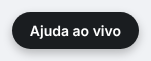
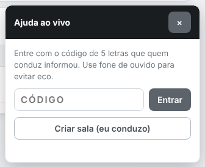
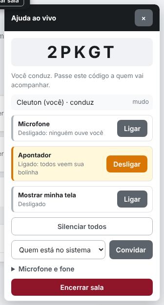
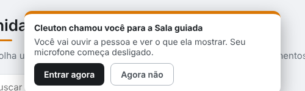
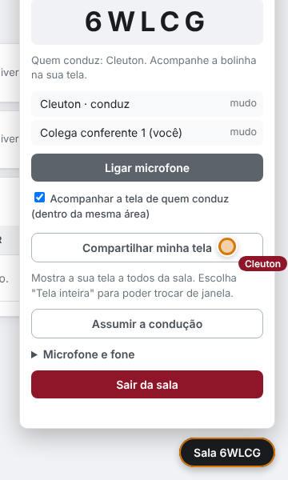
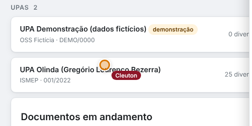
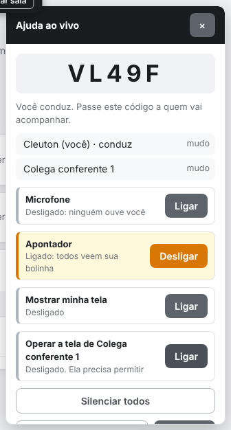
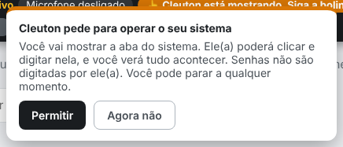
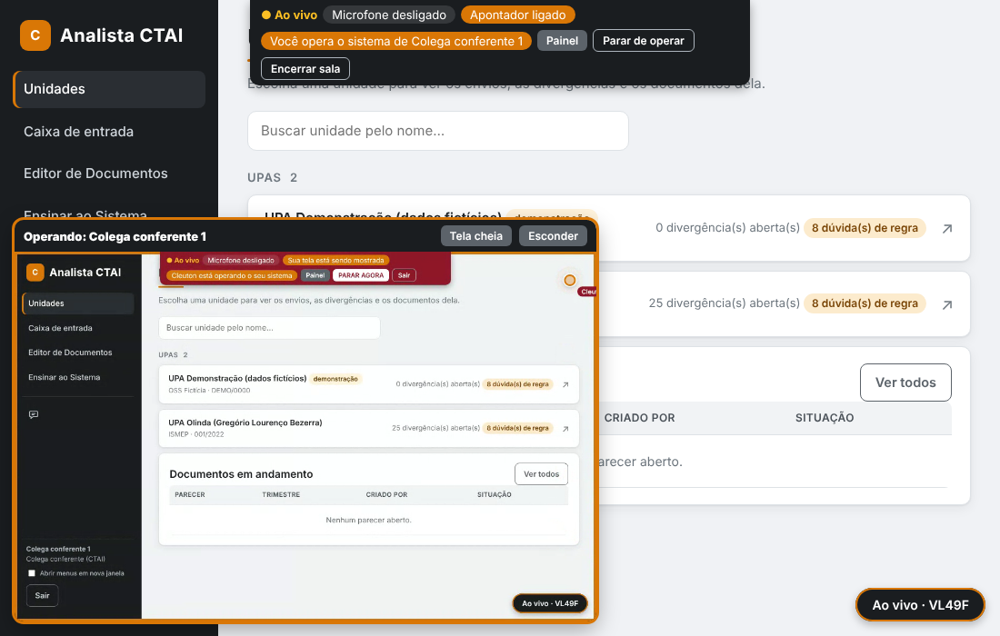
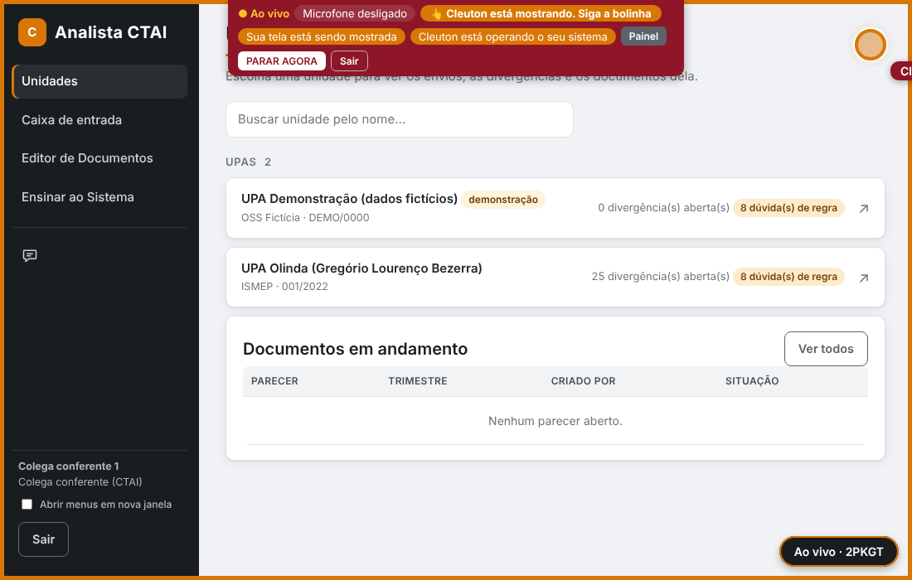

A Ajuda ao vivo serve para treinamentos e para mostrar o sistema a alguém. Uma pessoa conduz (fala e mostra) e as outras acompanham (ouvem e veem). Qualquer pessoa com login pode criar uma sala. Nada é gravado.
Quem conduz cria a sala, chama as pessoas e mostra
Ache o botão "Ajuda ao vivo"
Ele fica no canto de baixo, à direita, em todas as telas do sistema.

Abra e clique em "Criar sala (eu conduzo)"
O painel abre. Se você só vai acompanhar alguém, digite o código no campo e clique em "Entrar".

Chame as pessoas
A sala ganha um código de 5 letras. Escolha quem convidar e clique em Convidar: quem estiver com o sistema aberto recebe um aviso na tela, e a equipe da CTAI recebe também uma mensagem em "Falar com a equipe". Também dá para passar o código por telefone ou mensagem.

No painel, cada função é uma chave que você liga e desliga:
- Microfone: começa desligado.
- Apontador: a bolinha que mostra onde você está.
- Mostrar minha tela: veja o passo 4.
- Operar a tela de…: veja o passo 8.
- Silenciar todos e Convidar.
Com a sala ativa, uma faixa no alto da tela mostra o que está ligado, com os botões Painel e Encerrar.
Mostre o sistema: bolinha ou tela inteira
Apontador (bolinha): quem acompanha vê uma bolinha com o seu nome onde você move o mouse, e acompanha você de uma tela do sistema para outra. Funciona dentro do sistema.
Compartilhar minha tela: todos veem a sua tela de verdade. Escolha "Tela inteira" na janela do navegador para poder trocar de janela, de menu e até de programa.
O apontador chama a atenção de quem acompanha: a bolinha é grande e pulsa; na faixa do alto aparece "[seu nome] está mostrando. Siga a bolinha"; se a bolinha estiver fora da parte visível da tela, uma seta piscando na borda indica o caminho; e, com "Acompanhar a tela de quem conduz" marcada, a tela da pessoa rola sozinha até o ponto mostrado.
Quem acompanha ouve, vê e, se quiser, fala
Aceite o convite
Um aviso aparece no alto da tela. Clique em Entrar agora. Se não puder agora, clique em "Agora não": o aviso não volta para aquela sala. Dá para entrar depois digitando o código no botão "Ajuda ao vivo".

Acompanhe e fale quando precisar
Seu microfone começa desligado. Clique em "Ligar microfone" para falar. Quem fala fica destacado na lista.

Quando quem conduz mexe o mouse, você vê a bolinha com o nome dele:

Se ele estiver em outra tela do sistema, você é levado até lá automaticamente (marcação "Acompanhar a tela de quem conduz"). Se compartilhar a tela, ela aparece num quadro no canto, com os botões Tela cheia e Esconder.
Assumir a condução e sair
Assumir a condução: qualquer pessoa na sala pode clicar nesse botão para passar a conduzir (a bolinha dela passa a valer e quem conduzia vira participante).
Sair da sala: quem acompanha só sai. Se quem criou a sala clicar em "Encerrar sala" (dois cliques, para não encerrar por engano), a sala fecha para todos. A sala fecha sozinha depois de 4 horas.
Operar o sistema de outra pessoa acesso remoto, só dentro do sistema e só com a permissão dela
Peça a permissão
Quem conduz abre o painel e liga "Operar a tela de [nome]". A outra pessoa recebe este aviso e escolhe Permitir ou "Agora não". Só quem conduz pode pedir.


Quem opera: veja, clique e digite
A tela da outra pessoa aparece num quadro. Clique, role e digite sobre a imagem: o que você faz acontece no sistema dela, e você escuta pelo microfone dela. A faixa do alto mostra "Você opera o sistema de…", com o botão Parar de operar.

Quem é operado: tudo à vista e você manda
Enquanto alguém opera o seu sistema, a tela ganha uma moldura âmbar e a faixa do alto fica vermelha, com o nome de quem está operando. Você vê tudo acontecer e pode clicar em PARAR AGORA a qualquer momento.

Dicas para a voz ficar boa
- Use fone de ouvido. Sem fone, o som da caixa volta para o microfone e vira eco e chiado.
- Fique perto do microfone e em local sem barulho.
- Quem não está falando deve deixar o microfone desligado.
- Em "Microfone e fone", dentro do painel, dá para escolher outro microfone ou fone.
- Use o Chrome ou o Edge atualizados.
Se algo não funcionar
| O que aconteceu | O que fazer |
|---|---|
| Mudei de página e parei de ouvir | A sala volta sozinha. Abra o painel e toque em "ativar o som": o navegador exige um clique para liberar o som. Seu microfone volta como estava. |
| Não vejo a bolinha | Procure a seta piscando na borda da tela: ela aponta para onde a bolinha está. A bolinha só aparece quando você está na mesma tela de quem conduz. Deixe marcada a opção "Acompanhar a tela de quem conduz" ou clique em "Ir para lá" no aviso do alto. |
| Não vejo a tela compartilhada | Confira se o quadro não foi escondido. Peça a quem compartilha para clicar em "Compartilhar minha tela" de novo e escolher "Tela inteira". |
| Não ouço ninguém | Toque em "ativar o som". Veja se o fone certo está escolhido em "Microfone e fone" e se o volume do computador está alto. |
| O microfone não liga ("Permitir microfone") | O painel diz o motivo. Se o navegador bloqueou: clique no cadeado ao lado do endereço, em Microfone escolha Permitir e clique em "Permitir microfone" no painel (não precisa sair da sala). Se for outro programa usando o microfone (Teams, Zoom), feche-o e tente de novo. |
| Ninguém me ouve | O microfone começa desligado: clique em "Ligar microfone". Se aparecer "Sem acesso ao microfone", libere o microfone para este site no navegador (cadeado ao lado do endereço). |
| Não escuto ninguém / aparece "Áudio com falha" | A faixa do alto mostra o estado: Áudio conectando…, Áudio conectado ou Áudio com falha (e a lista mostra por pessoa). Se a faixa diz "conectado" e não sai som, toque em "ativar o som" e confira o fone. Se diz "com falha", quase sempre é a rede bloqueando a voz: a tela e o apontador continuam funcionando, e a TI precisa liberar UDP ou configurar um servidor TURN. |
| Fica pior com mais gente | A voz vai direto de computador a computador; com muitas pessoas a internet pesa. Use no máximo 10 pessoas e peça para os demais deixarem o microfone desligado. |
| Escolhi a tela inteira e a operação foi recusada | Para operar, a pessoa precisa mostrar a aba do sistema. Peça para ela permitir de novo e escolher a aba. |
| Cliquei na lista de opções e nada abriu | Listas de seleção abertas podem não responder à distância. Peça para a pessoa escolher a opção, ou guie pelo apontador. |
| Não conecta (redes com bloqueio) | Algumas redes bloqueiam esse tipo de conexão. Teste em outra rede ou avise o suporte: um servidor de apoio da ATI resolve. |